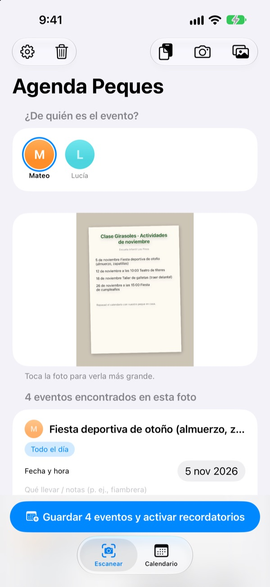
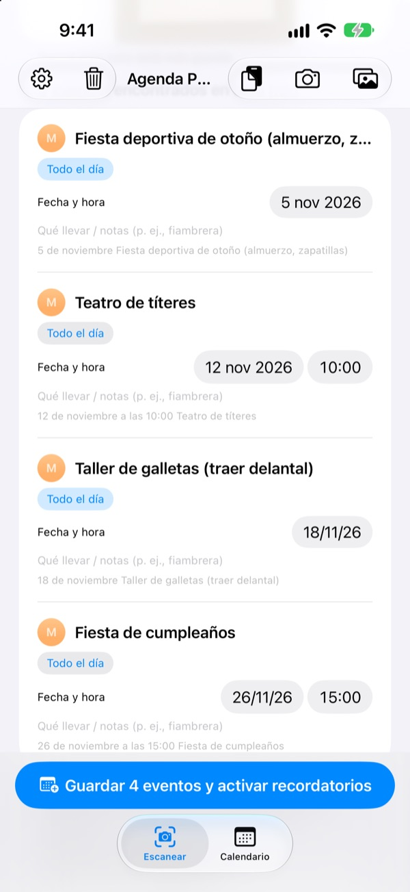
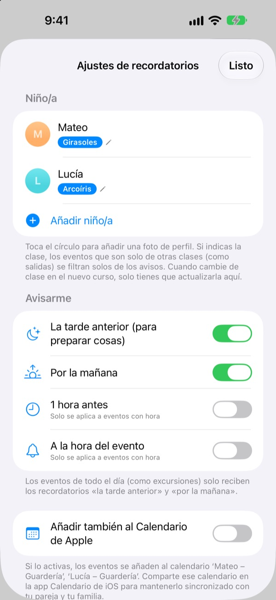
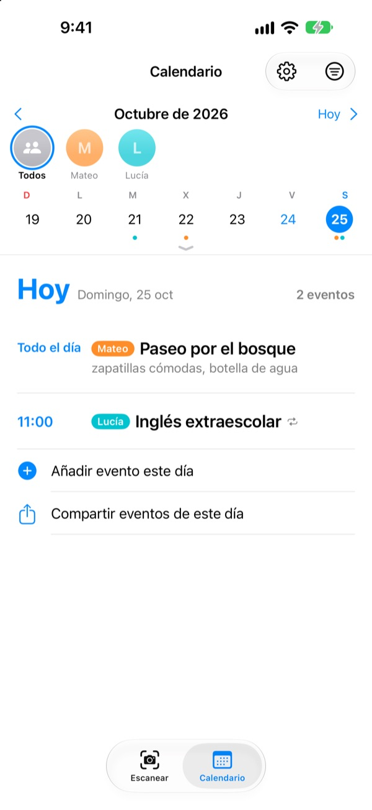

Foto a la circular.
Y te avisamos la víspera.
Fotografía el calendario mensual que te da la guarde. Agenda Peques lee las fechas, las horas y el nombre de cada actividad y las mete todas de una vez. La noche antes de la excursión, a las 20:00, te recuerda que toca preparar la comida.
Todo es gratis. Tus fotos no salen de tu iPhone.

Haz una foto a una circular
Aquí tienes una circular de ejemplo con las actividades del mes que viene. Hazle una foto y, igual que la app, sacará las actividades y lo que hay que llevar, y programará los avisos a las horas que elijas.
¿Sigues pasando la circular a mano al calendario?
Cinco o seis actividades al mes, y cada una con algo distinto que llevar: la comida, el chándal, un delantal. El calendario de la nevera no se ve de camino al trabajo, y siempre te acuerdas la misma mañana. Agenda Peques convierte esa hoja de papel en eventos y avisos.
Una foto, todo el mes
Calendario mensual, circular o aviso suelto: haz una foto o elígela de tu fototeca y se leen las fechas, horas y nombres de las actividades. También puedes pegar un mensaje de la guarde, y frases como «mañana» o «este viernes» se convierten en fechas.
Antes de guardar puedes corregir el título, la fecha o la nota de qué llevar, y quitar lo que sobra deslizando. Si indicas la clase de tu peque, se descartan solas las actividades de otras clases.

La noche antes, te avisa
Elige entre las 20:00 de la tarde anterior, las 7:30 de esa mañana, 1 hora antes o a la hora justa. La nota de qué llevar aparece en el aviso, así la mochila no se queda a medias.
Si activas el Calendario de Apple, todo va a un calendario con el nombre de tu peque y nada se añade dos veces.

Con varios peques y toda la familia
Cada niño tiene su color. Puedes verlos a todos juntos o de uno en uno, y la app usa lo que ya tienes para adivinar de quién es la circular nueva.
Envía un enlace de invitación y tu pareja, los abuelos o la canguro verán y podrán editar las mismas actividades. Un widget en la pantalla de inicio te muestra lo próximo.

Empezar es cosa de tres pasos
- 1
Añade a tu peque
Pon su nombre y su clase. La foto de perfil, cuando quieras.
- 2
Fotografía la circular
De frente y con el texto nítido, se lee mucho mejor.
- 3
Revisa y guarda
Permite las notificaciones y te avisará cuando hayas elegido.
Cuándo llegan los avisos
- 20:00 de la tarde anterior
- Para preparar las cosas. Activado de serie
- 7:30 de esa mañana
- Lo que hay hoy. Activado de serie
- 1 hora antes
- Solo en actividades con hora
- A la hora del evento
- Solo en actividades con hora
Las actividades de todo el día, como una excursión, solo tienen el aviso de la tarde anterior y el de esa mañana. Puedes activarlos o desactivarlos en Ajustes cuando quieras.
Todo es gratis
Gratis
- Leer actividades de fotos y mensajes
- Corregir antes de guardar y filtrar otras clases
- Avisos la tarde anterior, por la mañana, 1 hora antes y a la hora
- Un color por peque y un calendario conjunto
- Sincronización con el Calendario de Apple
- Compartir con la familia por enlace
- Widget en la pantalla de inicio
Apoyar al desarrollador
- Desde Ajustes puedes dejar una pequeña propina, la que quieras
- La propina no desbloquea nada. La app funciona igual sin ella
Sin anuncios ni suscripciones.
Preguntas frecuentes
¿Qué tipo de fotos puedo usar?
Calendarios mensuales en cuadrícula, circulares escritas en texto y avisos sueltos o folletos. Si haces la foto de frente y con el texto nítido, se lee mejor. También puedes elegir varias fotos y escanearlas a la vez.
Faltan algunas actividades o hay una errata en el título.
La letra a mano o muy clara puede costar de leer. Corrige el título, la fecha o lo que hay que llevar directamente en la lista, o desliza para quitar lo que no necesites. Para añadir lo que falte, usa «Añadir evento a mano» en la pestaña Escanear y vuelve a guardar.
No me llegan los avisos.
Comprueba que las notificaciones están permitidas en Ajustes > Notificaciones > Agenda Peques. En los ajustes de la app (⚙️) también eliges qué avisos quieres recibir.
Se cuelan actividades de otras clases.
Escribe el nombre de la clase de tu peque en Ajustes y las actividades solo para otras clases se descartarán. Cuando cambie de curso, basta con cambiarlo ahí.
Tengo más de un hijo.
En Ajustes puedes añadir a todos los que quieras, cada uno con su foto. Al escanear, elige de quién son las actividades: en el calendario cada uno sale con su color y puedes alternar entre la vista conjunta y la de cada peque.
¿Cómo comparto la agenda con mi pareja?
En Ajustes, dentro de «Compartir agenda», toca «Invitar a otras personas» y envía el enlace por mensaje. Podrá ver y editar a todos los peques y sus actividades, y los cambios de cualquiera aparecen al momento en los dos iPhone. No tiene nada que ver con En familia de Apple.
¿Hay otras formas de compartir?
Con el botón de compartir de la pestaña Calendario puedes enviar un archivo de Agenda Peques, un archivo de calendario (.ics) o un resumen en texto. Con «Añadir también al Calendario de Apple» se crea un calendario con el nombre de tu peque; si lo compartes por iCloud en la app Calendario, la familia también lo tendrá al día.
¿Se envían mis fotos o actividades a algún sitio?
No. El texto de las fotos se lee entero en tu dispositivo y los datos se guardan solo ahí. Las actividades pasan por tu iCloud únicamente si invitas a alguien con «Compartir agenda», y solo para esas personas.
¿Algún problema o echas algo en falta? Escríbenos a leeo@kakao.com. Solemos responder en 2 o 3 días. Si nos dices tu modelo de iPhone y la versión de iOS, nos ayudas mucho.